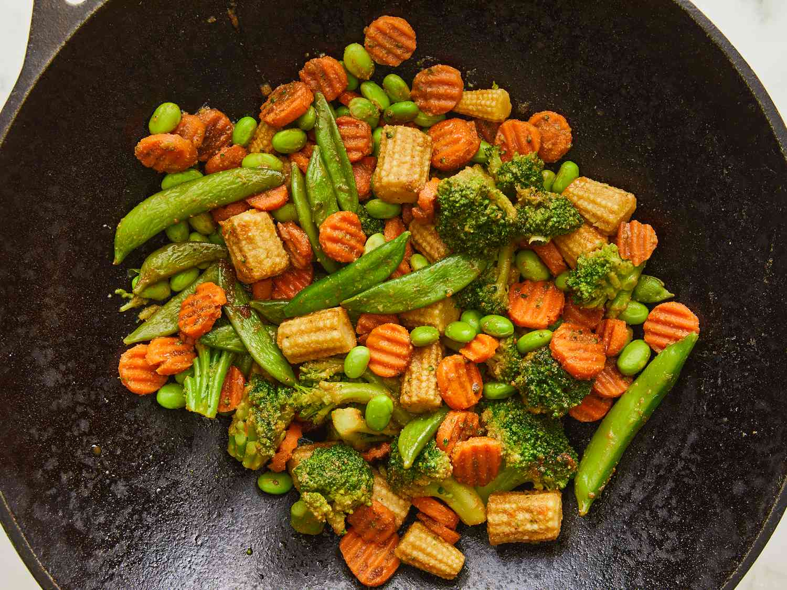

Quick Frozen Vegetables

This is a super simple recipe for cooking vegetables from a frozen state. So simple, it's less a recipe and more of a "heat and serve" sort of thing.
You will need:
- Bag of frozen vegetables
- Butter or oil
- Salt and pepper (optional)
- A pan with lid
- Choice of protein (optional)
How to make:
- Preheat your pan on medium heat
- Add butter or oil
- Add vegetables
- Cover with lid
- Allow to cook until heated through
- Add protein
- Continue to took until protein is at safe-to-eat internal temperature
- Season as desired